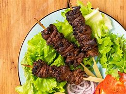
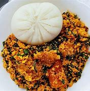

Explore the Flavors of Nigeria
Discover traditional and modern Nigerian recipes
Featured Meals
Nigerian Breakfast Delight
Suya Night
Egusi Soup Feast
Introduction
Welcome to Recipe Book, your gateway to the vibrant world of Nigerian cuisine! Our website is dedicated to sharing the rich flavors and traditions of Nigerian cooking, from classic dishes like Jollof Rice and Suya to modern twists and innovative recipes. Whether you're a foodie, a Nigerian looking for a taste of home, or just curious about new flavors, we invite you to explore our collection of recipes and discover the delicious diversity of Nigerian food.